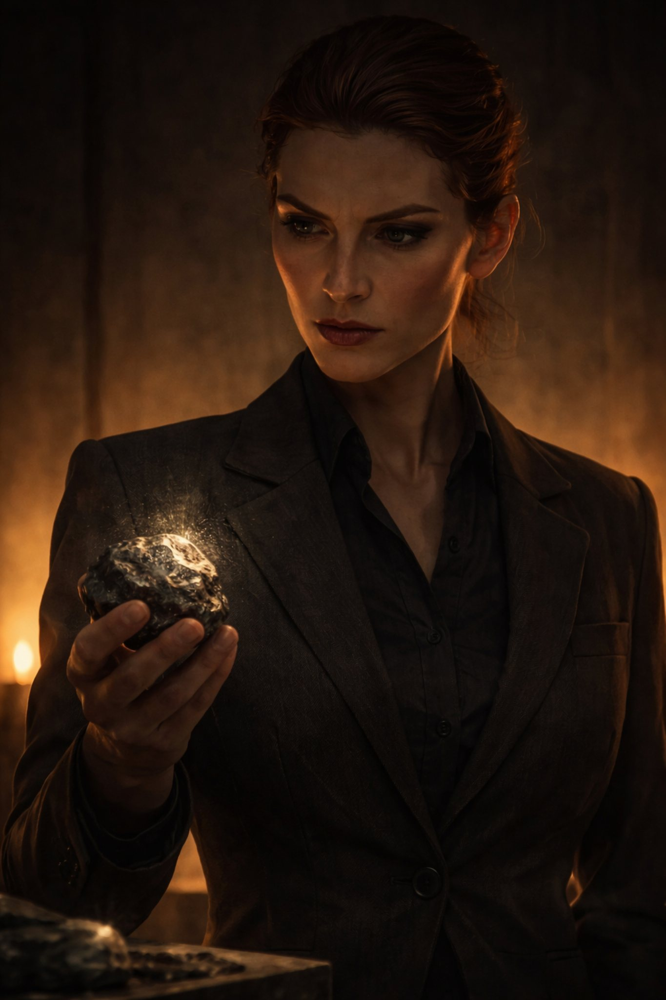

Поглавље 20: Трећа камена
Página individual del capítulo con lectura y ejercicios.

Марина и Катарина, руске агенткиње из Агенције за мистичне послове, стижу на треће место са мапе – Храм Светог Саве. Овде је Софија оставила треће камење. Иако су озбиљно претучене од Наташе, њихова мисија мора да настави.
Марина (шапуће на руском):
"Надеюсь, эта ведьма не появится снова."
(На српском: "Надам се да се та вештица неће поново појавити.")
Катарина (одговори на руском):
"Просто возьми камень и бежим."
(На српском: "Само узми камен и бежимо.")
Оне брзо проналазе камење скривено иза једног од стубова храма. Када га узму, одмах се враћају у своју базу.
Ирина их чека у мрачној сали, њен поглед је хладан. Марина јој пружа камење.
Ирина (на руском):
"Наконец-то нечто полезное. Али где је Наташа?"
(На српском: "Коначно нешто корисno. Али где je Наташа?")
Катарина (спусти поглед):
"Она исчезла. Мы не смогли её найти."
(На српском: "Нестала je. Нисмо могле да je нађемо.")
Ирина им баци презирни поглед, али им пружи малу кутију са златним новчићима.
"Ово је ваша награда. Али немојте да ме разочарате још једном. Наташа мора бити нашa."
(На српском: "Ово je ваша награда. Али немојте да ме разочарате још једном. Наташа мора бити наша.")
Марина и Катарина кимају, али знају да је Ирина незадовољна.
Ирина (додатно, на руском):
"Следующий камень – Зедањ. Ако не успејете, бићете замењене."
(На српском: "Следећи камен – Зедањ. Ако не успете, бићете замењене.")
Оне излазе, а Ирина остаје да размишља. Гледа камење и шапће:
"Наташа, не можеш побећи вечно. Час дивљака припада Русији."
Крај двадесетог поглавља.